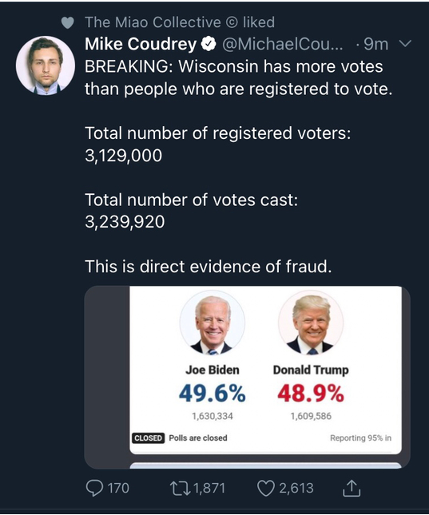

Video Clip of Biden
A short video clip of former Vice President Joe Biden is circulating on social media, but it misleadingly omits any context for Biden’s words.
The 10-second clip shows Biden only saying, “They’re saying, ‘Jeez, the reason I was able to stay sequestered in my home is because some black woman was able to stack the grocery shelf.'”
Biden did say those words during a Sept. 15 event with veterans in Florida. But the full context of his remarks indicates he was suggesting that Americans are becoming more aware and realizing “we’re all in this together” during the COVID-19 pandemic. He also expressed gratitude for such essential workers.
The short, out-of-context clip was amplified on Twitter by a contributor for the conservative youth organization Turning Point USA, among others. On Facebook, a columnist for the Patriot Post shared a video of the remark repeating in a loop.
Fake Coronavirus Cures
Online posts have claimed to reveal various “cures” for the new coronavirus. Some are benign, like eating boiled garlic, while others are potentially dangerous, like drinking chlorine dioxide, an industrial bleach. Neither will cure the virus.
Treatments billed as miracle cures have cropped up across the internet since the new coronavirus began spreading in Wuhan, China, at the end of December.
One rumor claims that consuming garlic will treat the illness, which the World Health Organization has now named COVID-19. Another says loading up on vitamin C will do the trick. Yet another would have people, essentially, drink bleach. None of these will treat or cure the virus.
A recipe circulating on social media is spreading this false information: “Good news, Wuhan’s corona virus can be cured by one bowl of freshly boiled garlic water. Old Chinese doctor has proven it’s efficacy. Many patients has also proven this to be effective. Eight (8) cloves of chopped garlics add seven (7)cups of water and bring to boil., Eat and drink the boiled garlic water, overnight improvement and healing. Glad to share this.”
There are no vaccines or antiviral treatments that are recommended to prevent or treat the new coronavirus, according to the Centers for Disease Control and Prevention. Patients, however, can receive supportive care to treat their symptoms.
But the claim about garlic has spread widely enough that the WHO knocked it down, saying on a webpage dedicated to rumors about the virus: “Garlic is a healthy food that may have some antimicrobial properties. However, there is no evidence from the current outbreak that eating garlic has protected people from the new coronavirus.”
Garlic has a reputation for being antimicrobial and antiviral, according to a systematic review cited by the National Center for Complementary and Integrative Health, which researches alternative medicine. But that review included only one trial and found that there was insufficient evidence that garlic could prevent or treat a common cold, according to the NCCIH.
Problem with the votes

On Nov. 4, 2020, as several states continued to count votes in the 2020 U.S. presidential election, a rumor went viral on social media holding that Wisconsin had counted more votes (3,239,920) than it had registered voters (3,129,000). On Twitter, one user claimed that this was clear evidence of fraud.
The claim made in this tweet is false.
Wisconsin has not counted more votes than it has registered voters. This tweet is comparing the vote count from 2020 with the number of registered voters from 2018. When we take a look at Wisconsin’s current total of registered voters, we see that there is nothing fraudulent about the state’s count.
According to the Wisconsin Election Commission, the “State of Wisconsin had 3,684,726 active registered voters on November 1, 2020.” It’s unclear where the “3,239,920” number shown in the above-displayed tweet comes from. As of this writing, The New York Times reports that a total of “3,296,836” votes have been cast in Wisconsin. In either case, the number of votes counted does not exceed the number of registered voters.
So where did the “3,129,000 registered voters” statistic come from? The 2018 midterms.
According to data from the United States Census Bureau concerning “Voting and Registration in the Election of November 2018,” Wisconsin had 3,129,000 registered voters in 2018.